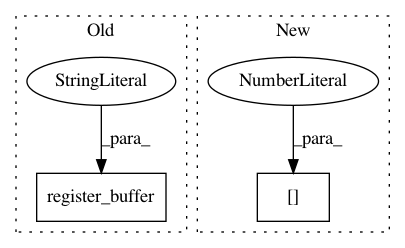

a049ecb81701dd61744cbbf5922c4dc2ee6542fa,ch07/lib/dqn_model.py,NoisyFactorizedLinear,__init__,#NoisyFactorizedLinear#Any#Any#Any#Any#,40
Before Change
sigma_init = sigma_zero / math.sqrt(in_features)
self.sigma_weight = nn.Parameter(torch.Tensor(out_features, in_features).fill_(sigma_init))
self.register_buffer("epsilon_input", torch.zeros(1, in_features))
self.register_buffer("epsilon_output", torch.zeros(out_features, 1))
if bias:
self.sigma_bias = nn.Parameter(torch.Tensor(out_features).fill_(sigma_init))
def forward(self, input):
After Change
super(DQN, self).__init__()
self.conv = nn.Sequential(
nn.Conv2d(input_shape[0], 32, kernel_size=8, stride=4),
nn.ReLU(),
nn.Conv2d(32, 64, kernel_size=4, stride=2),
nn.ReLU(),
In pattern: SUPERPATTERN
Frequency: 5
Non-data size: 2
Instances
Project Name: PacktPublishing/Deep-Reinforcement-Learning-Hands-On
Commit Name: a049ecb81701dd61744cbbf5922c4dc2ee6542fa
Time: 2017-10-28
Author: max.lapan@gmail.com
File Name: ch07/lib/dqn_model.py
Class Name: NoisyFactorizedLinear
Method Name: __init__
Project Name: pytorch/fairseq
Commit Name: b8a938e96e08e5b39deb585d6cc6690de062dd4d
Time: 2020-10-22
Author: myleott@fb.com
File Name: fairseq/models/bart/hub_interface.py
Class Name: BARTHubInterface
Method Name: __init__
Project Name: rusty1s/pytorch_geometric
Commit Name: 6ad34e5887f847aeb9f681e8f290d5877b76e52b
Time: 2020-05-13
Author: matthias.fey@tu-dortmund.de
File Name: torch_geometric/nn/models/schnet.py
Class Name: GaussianSmearing
Method Name: __init__
Project Name: OpenNMT/OpenNMT-py
Commit Name: ce69ccc9be6560ca1ccf82319a0af2bebde1ceda
Time: 2018-08-25
Author: benzurdopeters@gmail.com
File Name: onmt/utils/loss.py
Class Name: NMTLossCompute
Method Name: __init__
Project Name: rusty1s/pytorch_geometric
Commit Name: d08f673481a2cfaa0ce702e80cc22cdd25e600e5
Time: 2020-05-31
Author: matthias.fey@tu-dortmund.de
File Name: torch_geometric/nn/models/schnet.py
Class Name: GaussianSmearing
Method Name: __init__